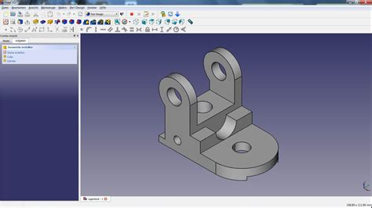

Műszaki Kommunikáció
Ez a kurzus az Auto CAD alapjait tartalmazza.
Tematika
Audomány, természettudomány, informatika alapvető fogalmai.
Az információelmélet alapjai
A műszaki modellezés alapjai
A geometriai modellezés és számítógépes eszközei